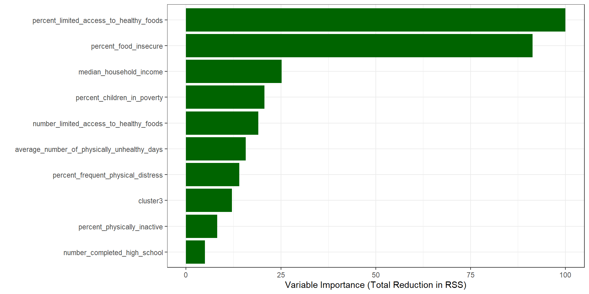

Food Environment Index appears to be a confounding variable

Summary
During our exploratory data analysis (EDA), we observed that the Food Environment Index (FEI) had an inverse relationship with obesity — suggesting that counties with better food environments tend to have lower obesity rates. However, when we modeled this relationship using linear regression, the results became inconsistent. In one model, FEI appeared to be a strong negative predictor of obesity, but once we added its key components — percent food insecure and percent with limited access to healthy foods — FEI became statistically insignificant. This indicates that FEI is a confounded composite variable, meaning its apparent effect on obesity is actually driven by the variables that make up the index. Because of this, FEI is not a reliable standalone predictor of obesity.
To understand what drives FEI and explore its confounding nature, I built a decision tree to identify the top predictors of FEI. The two most influential variables were % food insecure and % with limited access to healthy foods. I then ran a new model including these two variables along with % physically inactive, a variable already shown to be a strong predictor of obesity. In this final model, physical inactivity remained highly significant, limited access to healthy food was not significant, and food insecurity showed a significant but unexpected negative association with obesity. These findings suggest that it is more effective to use specific, interpretable variables related to food access rather than relying on an aggregated index like FEI. This approach provides clearer insights into the factors influencing obesity at the county level and helps guide more targeted recommendations.
Overall Key Takeaways:
Physical inactivity is the strongest and most consistent predictor of obesity.
% Food insecure becomes a significant (negative) predictor once we control for physical inactivity and drop FEI.
% Limited access to healthy food is not significant in any specification we tested.
Relying on the FEI alone is misleading because its signal disappears once key components (and physical inactivity) are included.